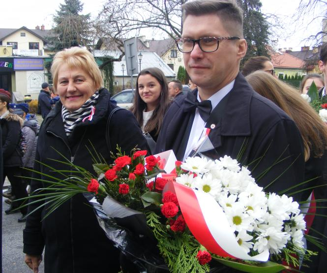
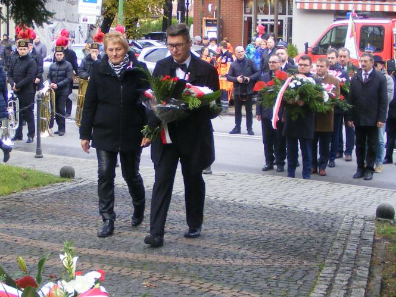
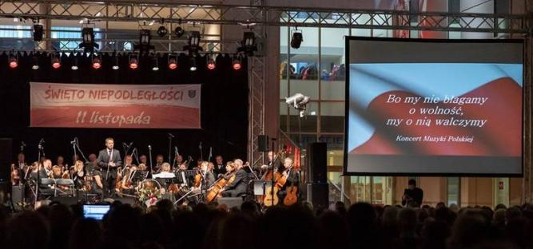
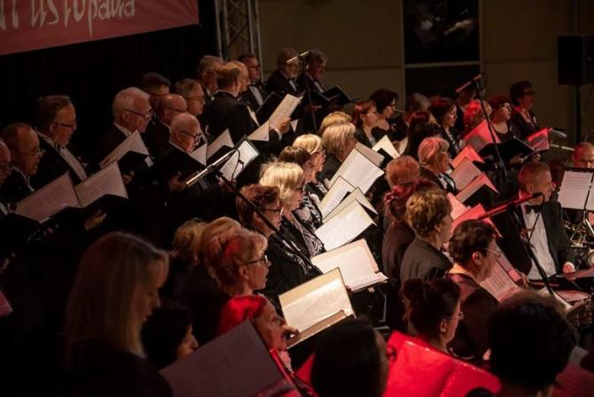
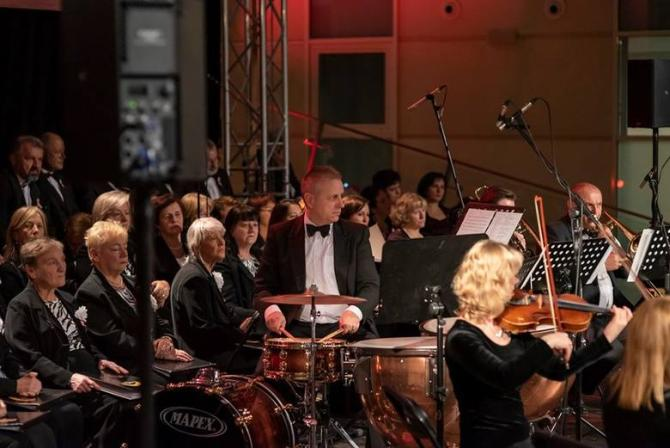

A tymczasem w Cameracie...
.
2019-11-11
Wielickie obchody 101 rocznicy odzyskania niepodległości przez Polskę przy Pomniku Odrodzenia Polski na miejskich plantach. My też tam byliśmy.


A wieczorem w "Solnym Mieście"... Koncert Muzyki Polskiej “Bo my nie błagamy o wolność, my o nią walczymy”.

Koncert w wykonaniu Wielickiej Orkiestry Kameralnej, chóru Camerata, chóru im. Jana Pawła II w Strumianach oraz Męskiego Kwartetu Wokalnego Filharmoników Krakowskich.
 
Podczas spotkania prowadzona była zbiórka funduszy na leczenie 19-letniego Marcela Danka ze Śledziejowic.Zdjęcia z koncertu A.Rogalska

© Stowarzyszenie Muzyczne Chór Camerata Wieliczka
Projekt i wykonanie:  Prowadzenie strony oraz zdjęcia: Małgorzata Wysocka-Cebula
Prowadzenie strony oraz zdjęcia: Małgorzata Wysocka-Cebula